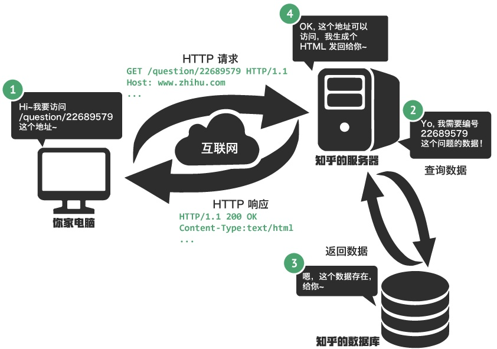

前端到后端，是一个什么样的过程呢？我觉得有点类似与打电话的过程。
打电话: 发出通话请求 => 另一边电话铃响 => 响应通话请求 => 对话。
前端到后端(用户与服务器的通话): 用户发出http请求(http就是大家都去遵守的通话规则，就像大家上路要遵守交通则，到政府申请什么什么有个具体的流程,这就是http协议) => 服务器接受请求 => 服务器响应请求。
这只是个类比，具体过程中还要比这复杂一点点，总体来说是这样的:
有三个东西: 你家电脑，服务器，数据库。

1.html5语言生成html文件，这是最原始的网页，没有任何色彩，没有任何修饰
2.css语言给最原始的网页加了一点修饰，有了颜色，有了一点点的动画效果和交互效果(这个CSS里很少)，但还是静态页面
3.有了JS，这个页面就有了很多交互效果，像图片轮播，元素和元素之间可以交流了(譬如说你对这个元素进行操作，另一个元素有了效果)
到这里都是前端的东西，接下来就是后端的东西了。
网页里面有些东西是固定不动的，有些东西是时刻会变得(什么意思呢？比如说百度这个网站，图片和搜索框是大部分时候不会变的，而登陆后显示的头像，每个人都是不一样的，还有登录后百度给你推荐的东西，每时每刻都在更新)。
固定不动的东西好解决，只要HTML、CSS、JS就能实现，麻烦的是会动的东西。
那会动的东西怎么解决呢？这个时候数据库登场了，服务器保留数据的能力有限，因此独立出了一个数据库，用于用户数据存放和获取。
服务器检测到你的登陆信息，向数据库发起请求，数据库返回数据,就有了你的头像信息什么的；服务器与用户之间还会进行一些局部的交流(类似与用户与服务器的悄悄话)，比如知乎上获取赞的数量是实时更新的。以上服务器做的事就是脚本，脚本创造了有逻辑的网页。